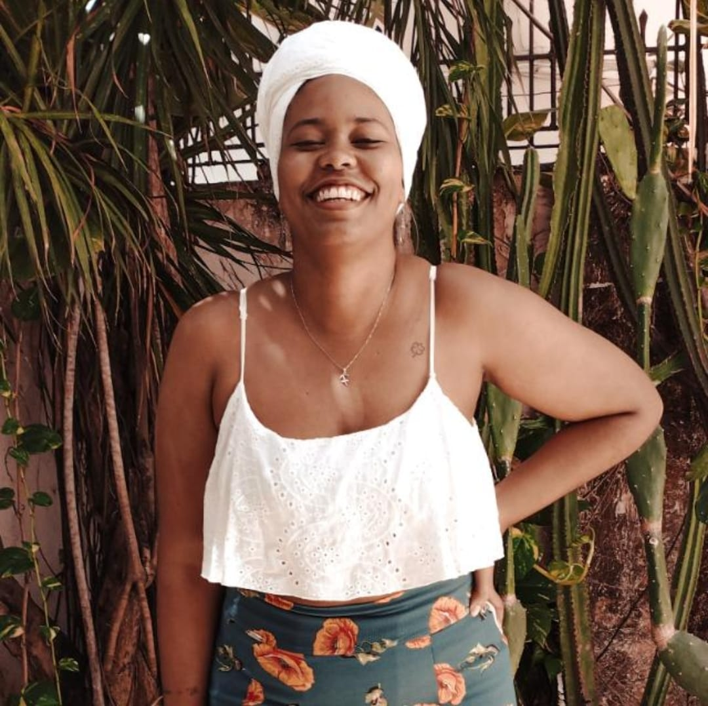

Camis Maciel
UX/UI Designer & DEVa Front-End
UX/UI Designer e quase graduada em Adm, encontrei o meu lugar no mundo embaixo das "asas" da tecnologia. Meu objetivo é projetar todos os fatores possíveis para assegurar que a experiência da pessoa usuária se aproxime o máximo possível do que desejamos, sempre focadas aos seus problemas reais, escutando-os de forma efetiva e empática, trabalhando em equipe e de forma multidisciplinar.